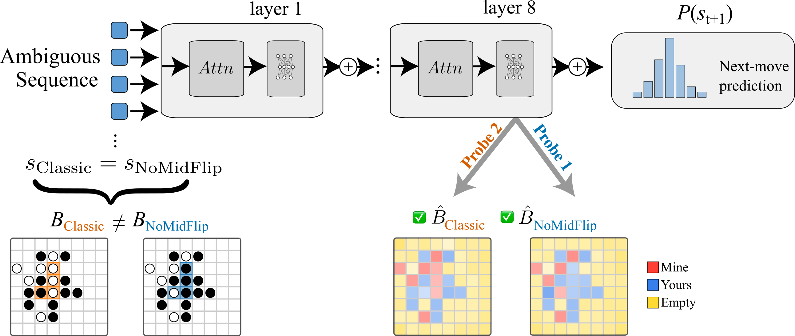
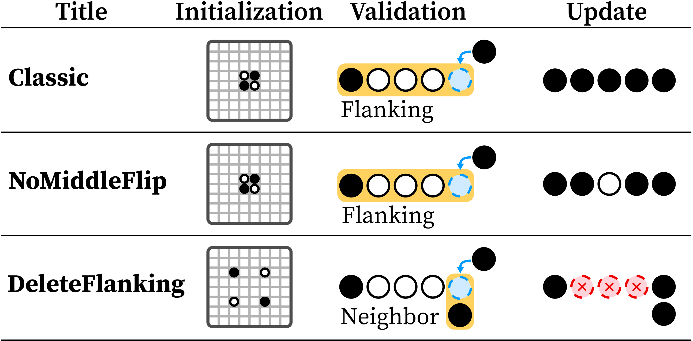

MetaOthello: A Controlled Study of Multiple World Models in Transformers
1Vermont Complex Systems Institute, University of Vermont · 2University of Michigan
*Equal contribution
ICML 2026 · Seoul, South Korea

MetaOthello is a suite of Othello-like games that share the same 8×8 board and token vocabulary but follow different rules for what counts as a legal move and how the board updates. We train small GPTs on sequences sampled from mixtures of these games, then use linear probes to read out — and intervene on — the board state the model believes it is tracking. When an early move sequence is ambiguous between rule sets, does the model keep one shared world model, several separate ones, or something in between?
Abstract
Foundation models must handle multiple generative processes, yet mechanistic interpretability largely studies capabilities in isolation; how a single transformer organizes multiple, potentially conflicting “world models” remains unclear. Prior work on Othello-playing networks tests world-model learning but focuses on one game with one rule set. We introduce MetaOthello, a suite of Othello-like games with shared syntax but different rules or tokenizations, and train small GPTs on mixed-variant data. Transformers trained on multiple variants learn shared world-state representations: probes trained on one game intervene on another’s board state nearly as well as matched probes. When games conflict, the model resolves the ambiguity through a localized mechanism we identify and steer. For isomorphic games with token remapping, representations are equivalent up to a single orthogonal rotation that generalizes across layers, showing the shared structure is abstract rather than surface-tied. These results show that transformers reconcile conflicting world models by sharing structure and localizing conflict, offering a path toward understanding how they organize many world models at once.
The MetaOthello Framework
A shared 8×8 board and vocabulary, several incompatible rule sets.

Game variants. Each MetaOthello variant shares the same board and token vocabulary but differs in its validation rule (what makes a move legal) and its update rule (which tiles flip as a result). Classic and NoMiddleFlip share a flanking-based validation rule but update the board differently; DeleteFlanking changes both the validation rule (neighbor-based) and the update rule (flanked tiles are removed rather than flipped). Because the games diverge in different ways, an early move sequence is often legal — and consistent with different board states — under more than one rule set at once.
Key Findings
Shared Representations
Transformers learn to generalize shared abstractions. Board represenations for two disparate games is causally interchangeable.
Shared Computation
Models also perform game-general computations in early layers and then later identify game identity for game specific calculations.
Ambiguity Circuit
When game sequences overlap and board representations are causally shared, we show mechanisms of how model resolve ambiguity.
Cite Us
If you find MetaOthello useful, please cite our paper:
@inproceedings{chawla_hall_2026_metaothello,
title = {MetaOthello: A Controlled Study of Multiple World Models in Transformers},
author = {Chawla, Aviral and Hall, Galen and Lovato, Juniper},
booktitle = {Proceedings of the 43rd International Conference on Machine Learning},
series = {Proceedings of Machine Learning Research},
volume = {306},
year = {2026},
address = {Seoul, South Korea},
publisher = {PMLR}
}